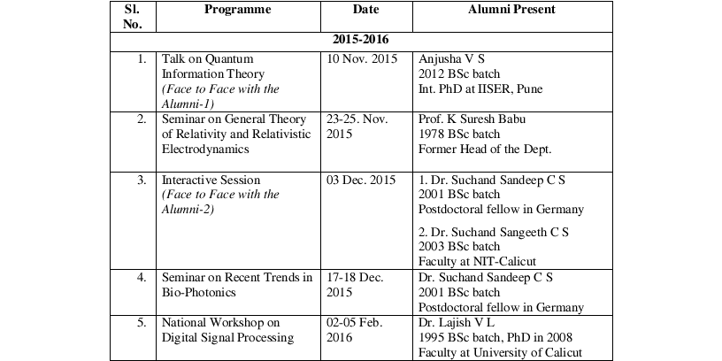
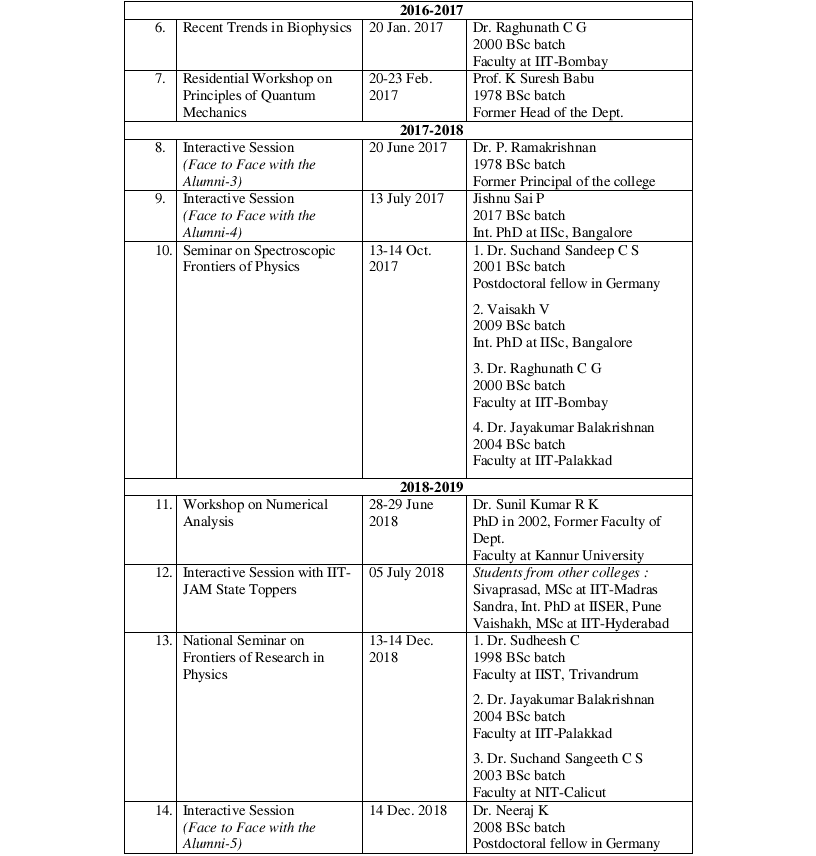
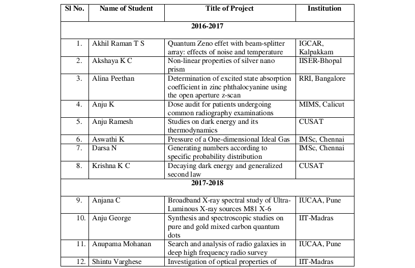
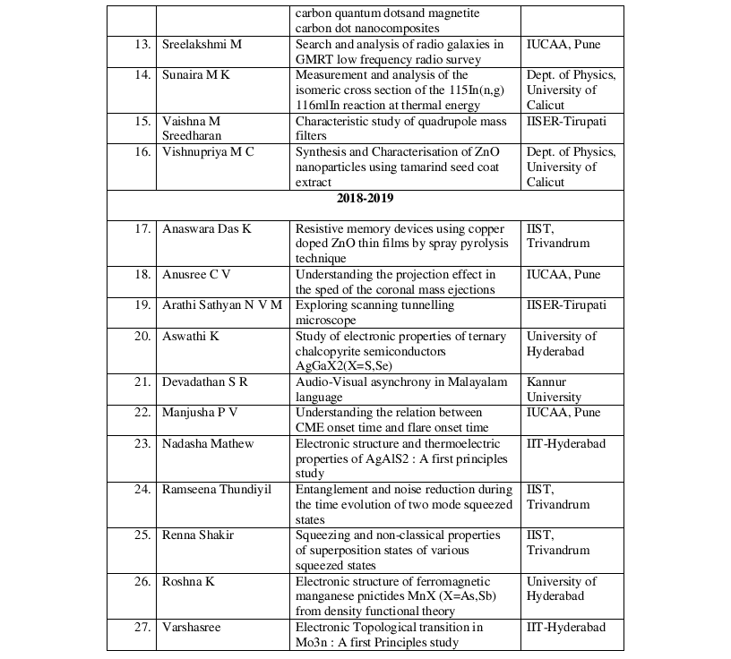
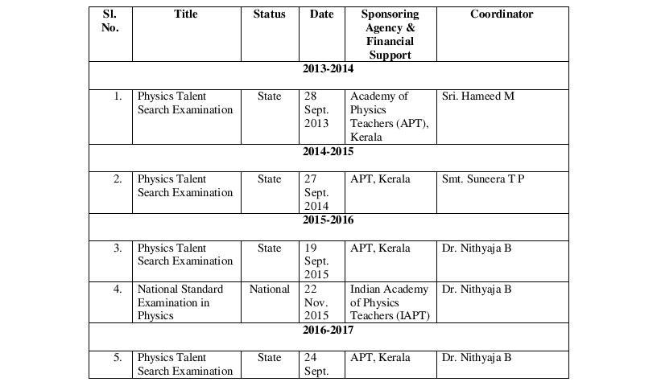
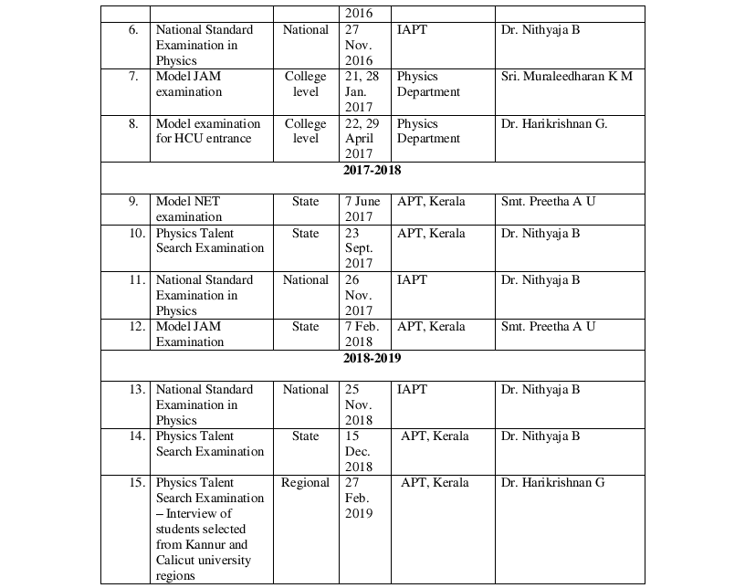
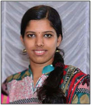
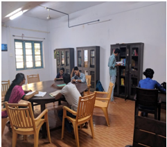
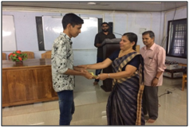
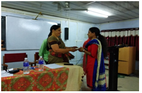

DEPARTMENT of PHYSICS
STUDENT SUPPORT PROGRAMMES
Face to Face with the Alumni
We invite our alumni studying and working in different premiere institutes in India and abroad to come to
our department and interact with the students. This personal interaction is a very effective way of
communicating to the students a feel for the career of a researcher and academic in physics and this
experience motivates them for a life in physics. In addition, these sessions provide the students a window
into the variety of academic experiences offered by different institutions in India and abroad. The alumni
discuss the nature of different entrance examinations after the BSc and MSc, the types of questions asked
in these tests and interviews and the kind of preparations needed. We also request our alumni to present
before the students an outline of their research work so as to expose the students to some of the current
research areas in physics. In the past few years we conducted five interactive sessions with the alumni.
Last year we arranged an interactive session with students from other colleges who were the IIT-JAM
toppers of the state. Also, our alumni have been among the resource persons in eight of the seminars and
workshops we organized in the past few years. The recent face to face sessions and the programmes
where our alumni served as resource persons are listed below. We have conducted 14 such programmes in
collaboration with our alumni in recent years.


Internship in Premiere Institutes for Msc Students
From 2017 batch onwards we have been insisting that our MSc students should complete their project by
internship at a premiere institute in India. We encourage the students to write directly to faculty members
in different institutes. Whenever they encounter difficulties in finding a guide for their project in a
national level institute, we step in and arrange the internship. Our students spend a period of around two
months in one of the national level institutes like IIT, IISER, NIT, IUCAA, HCU, IIST, RRI etc. and
complete their MSc project. This extended stay in these premiere institutes has been a motivation for the
students to take up research in physics after their MSc. The list of MSc students who had done internship
in premiere institutes in the last three years is given below.
In addition, we encourage the students to apply for the summer research fellowship offered by Indian
Science Academies. Two students in 2017 batch, Akhil Raman T S and Akshaya K C have done their
projects under this fellowship. Two students in 2017 batch have joined for PhD at University of Hyderabad (Akhil Raman T S) and
Manipal Academy of Higher Education (Alina Peethan) and another student has qualified NET
examination (Akshaya K C). Anupama Mohanan of 2018 batch has secured 3rd rank at the university level
for MSc. Anusree C V of 2019 batch has qualified GATE and Ramseena Thundiyil of 2019 batch will be
joining a project at IISER-Mohali in August this year, which will be an extension of her MSc project. In
general, the students in these batches exhibit a keen interest in pursuing a career of research in physics.


Training for national level tests for BSc students
We identify early on the highly talented students of each BSc batch through a post admission test and
continuous interaction and academic evaluation. We conduct a regular training programme to these
students to enable them study their subjects more critically and deepen their understanding through the
practice of solving problems. We also encourage them to solve the previous question papers of different
national level MSc entrance tests like JAM, JEST, and the entrance tests to different central universities.
To give the students the experience of writing these entrance tests we regularly conduct two annual tests
at our department : (1) Physics Talent Search Examination organized by Academy of Physics Teachers
(APT), Kerala and (2) National Standard Examination in Physics organized by Indian Academy of
Physics Teachers (IAPT). A good number of students attend these tests every year and those who excel in
them generally do well in the MSc entrance tests at the end of their BSc programme. A list of these tests
conducted in the past six years is given below.


Sreerekha Memorial Reference Library
Sreerekha S was an alumna of Physics Dept. in 2013 BSc
batch.
She was studious and a cheerful person who always made
everyone happy with her blissfulness. She used to support
and encourage people around her to achieve their dreams as
well.
Sreerekha had her primary education from Govt HSS
Perambra during which she participated in 17th National
Children's Science Congress-2010. After her graduation from
Govt. college Madappally in 2013 she completed her MSc in
Physics in 2015 from physics dept. of Calicut University. Her
work during her internship for MSc project at RRI,
Bangalore, was published in Physical Review A 93, 042504
(2016).
Sreerekha had been an ad hoc faculty of Physics Dept. of
Govt. Colege Madappally for a few months in 2016. She
qualified GATE in 2016 and was selected for PhD
programme at both IIT-Madras and IIT-Bombay. She
subsequently joined for PhD in high energy physics division
at IIT Bombay in January 2017.
Sreerekha’s sudden demise was on 15 March 2017 due to
cancer.
A few months later Sreerekha’s parents Muraleedhara Varrier
and Balasaraswathi Varrier decided to keep her memory alive
by extending their support to the students of this dept. With
their financial support Sreerekha Memorial Reference
Library and Reading Room was opened in the department
on 3rd Aug 2017. It has 215 books now and a subscription of
3 journals. During their leisure time and after their classes the
students can use the books and journals collected there
without any restrictions. The classes for the training
programme for national level tests for BSc students are also
being conducted here.


Endowments
1. Sreerekha Memorial Endowment is a merit cum
means scholarship instituted in 2017 by the class mates
and friends of Sreerekha to support one 5th semester BSc
student and one 3rd semester MSc student.
The endowment was distributed to the students in
December 2017 and November 2018. The recipients in
2017 were Alina Peethan (MSc) and Anand Das T K
(BSc) and in 2018, Aswathi K (MSc) and Priya
Narayanan (BSc)
2. In 2018 Sreerekh’a parents have instituted an
endowment to support one final semester BSc student
apply for national level MSc entrance tests. Under this
Rs.10,000 was awarded to the sixth semester student
Fathimathul Sahala of 2019 BSc batch.
3. The faculty members of the department have set up an
endowment fund on a merit cum means basis to support
one BSc student to pursue MSc rpogramme. So far two
students have been supported with this endowment.
Midhun V K of 2016 BSc batch was awarded Rs.30,000
and Fathimathul Sahala of 2019 BSc batch was awarded
Rs.16,000.
4. In 2017 Physics alumni of 1989 BSc batch have set up
an endowment fund on merit cum means basis to support
BSc students. Under this Rs.3500 each has been
distributed to two students of 2017 BSc batch, Sindhya A
and Akhil Kumar K K and one student of 2016 BSc
batch, Akshay M S.

